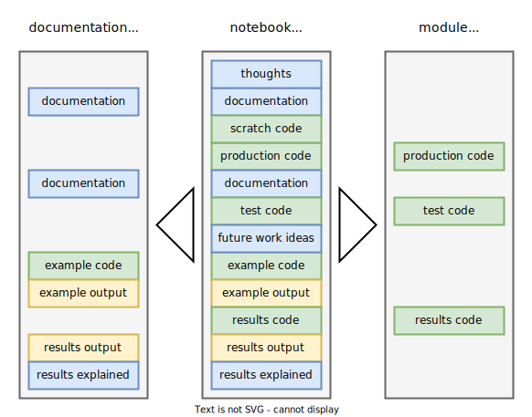

NBD
“NBD” means development in the notebook. This tool supports usage of Jupyter notebooks for literate programming. Under the literate programming paradigm, a computer program is given an explanation of its logic in a natural language, such as English, interspersed (embedded) with snippets of macros and traditional source code, from which compilable source code can be generated.
Our approach was greatly inspired by the nbdev project. Compared to nbdev, this tool that we call nbd has a more limited set of functionality, and is thus easier to use and maintain. The functions of nbd are the following:
- Locate project root directory.
- Selectively convert notebook cells to a Python script.
- Filter cells for documentation generation.
File structure
To use NBD features, project files should be organized into a specific structure. Here is the minimal file structure, using this project as an example:
nbs/ # notebooks dir
nbd.ipynb # this notebook
reseng/ # symlink to ../reseng/
_site/ # Web documentation dir
nbd.html # doc page built from nbd.ipynb
reseng/ # Python package dir
nbd.py # module built from nbd.ipynbreseng directory contains a Python package, built out of notebooks in the nbs directory. Symbolic link nbs/reseng -> ../reseng is created to make the package visible and easily importable from notebooks, so project modules can use each other within the project.
Project root
To use Nbd, create an instance with the name of your package, e.g. nbd = Nbd('popemp'), then call methods from that instance.
When new Nbd object is created, it searches for an absolute path of the project root directory and stores it in the Nbd.root field. This path is detected automatically and is the root directory of the project in which Nbd is instantiated.
Cell filtering
The key idea of the NBD approach is to use the Jupyter notebook as the only source that is manually edited, and to automatically convert it into module (script) and documentation files. Jupyter notebook is a linear sequence of cells. By designating each cell to belong to module, documentation, both or neither, we can flexibly filter the notebook during conversion. The diagram below illustrates this approach.

Conversion to module
Method Nbd.nb2mod() selectively exports code cells into a module (script), mirroring relative path to the notebook in the package folder. Only code cells with a nbd-module tag are exported.
import statements
All imports from project modules into notebooks must take absolute form from package import module or from package.module import object. Relative import statements are good for package portability, but do not work in a notebook. Helper function Nbd._relative_import() replaces absolute imports of modules from the project package with relative ones. For example, from reseng.nbd import Nbd will become from .nbd import Nbd. For this reason, statement form import ... can not be used to import project modules.
Conversion to documentation
Conversion is performed by an external tool Quarto. Quarto takes an .ipynb file with all it’s outputs and turns it into HTML. Quarto supports a rich Markdown syntax for output customization. NBD only provides a cell filtering function, leaving out all cells not flagged with nbd-docs. This function is exposed as module’s CLI interface and can be automatically applying by configuring Quarto like this:
format:
html:
ipynb-filters:
- reseng/nbd.py filter-docsWe build a website documentation from notebooks using quarto, and then publish it to GitHub Pages with ghp-import. Documentation is pushed to a separate gh-pages branch. Every push overwrites previous commit, erasing the history.
ghp-import --no-history --push --force nbs/_siteNotebooks and Git
Jupyter notebooks are technically JSON files with possibly embedded binary data in output cells (e.g. images). This make them not very Git friendly, because most Git tools are designed to work with plain text files. Git diffs of notebooks are not very readable, merges break notebooks, and binary blobs clog storage and don’t diff or merge. We use Jupytext tool to only version Markdown replicas of notebooks and add .ipynb files to .gitignore.
CLI interface
If tools.py is execuded directly as a module with filter-docs argument, it will apply the documentation filter. This is used for ipynb-filters option of Quarto renderer.